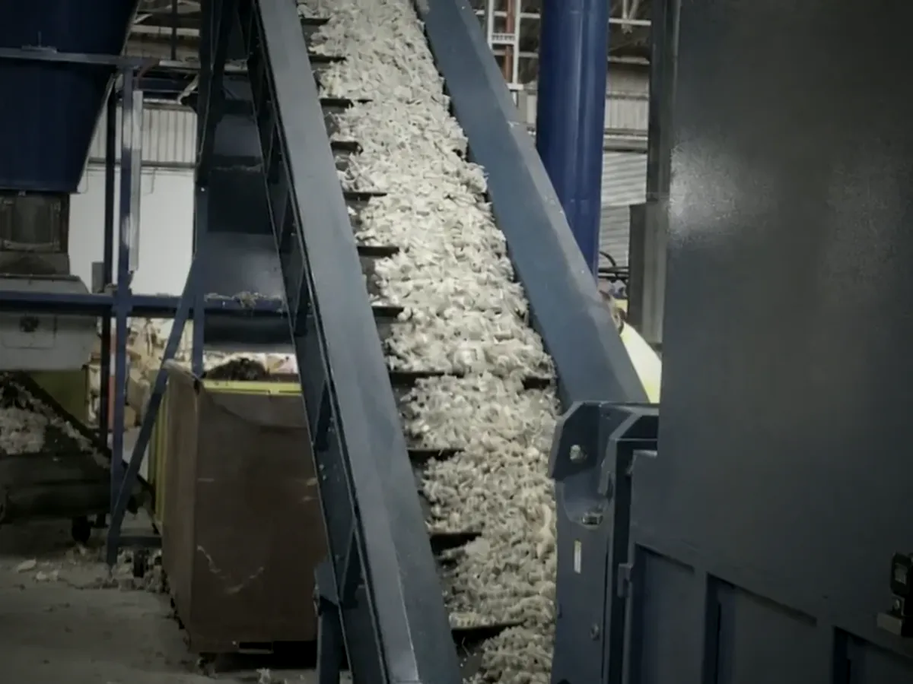
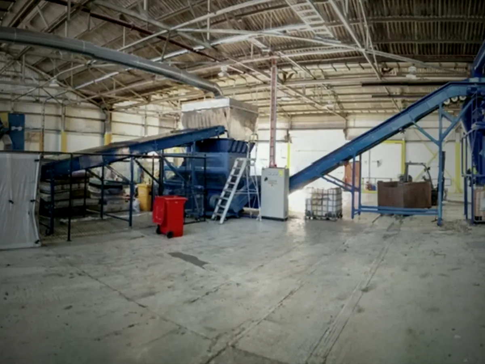

Process
How the steel gets clean
A purpose-built line in North Geelong, Victoria, turns a mattress into clean spring steel in well under a minute. Here is what happens between the shredder and the bale.
Step by step
Shred, separate, clean, bale
Shred
Whole mattresses are fed to twin-shaft Terex shredders that break the unit down to its components — steel, foam, fibre and fabric.
Magnetic separation
Three magnets pull the ferrous fraction out of the shredded stream. Everything non-magnetic continues down the line as flock.
Vibration & suction
Vibrating decks shake loose fabric and foam from the steel while high-volume suction lifts it away. Dust extraction keeps the air clean.
Electrostatic separation
An electrostatic fibre separator removes the last of the light fibre clinging to the wire, taking the steel to around 99% free of contamination.




Finishing
Checked, then loose or baled
Clean steel is inspected before it leaves the line. Depending on the order it is loaded loose into bins or containers, or pressed into bales that stack, forklift and containerise cleanly.
Bale size varies with the press cycle and is confirmed per order. Every bale is checked and counted before dispatch.
Product specificationThe plant
What runs the line
Twin-shaft shredders
Diesel-powered, capacity up to 1,400 m³ of product a day.
Magnets
Pull the ferrous fraction out of the shredded stream.
Conveyors
Move steel one way and flock the other through the separation stages.
Vibrating decks
Shake fabric and foam free of the wire.
Dust extraction units
Keep fibre out of the air and off the steel.
Air blades
High-velocity air strips the final light contamination.
Excavators
Feed the shredders and move material across the site.
Operators per shift
A trained crew running the line, checks and loading.

The numbers
Per 10,000 mattresses
Around 800 tonnes of mattresses go in. Roughly 270 tonnes of steel come out, with 99% of the steel in those mattresses recovered. The rest of the mattress — foam, fibre and fabric — is handled through the group's other recovery streams.
That is why The Metal Recycling Company can offer volume other recyclers cannot: the steel is a by-product of a plant that already runs every day.
National supplyFeedstock partners
Have ferrous or non-ferrous to move?
Recyclers, manufacturers, councils and demolition contractors with a consistent metal stream can send it to a line that already has an end market. Tell us what you have and how often, and we will tell you whether it fits.
See the product for yourself
Request a sample of the steel that comes off this line, or arrange a site visit.